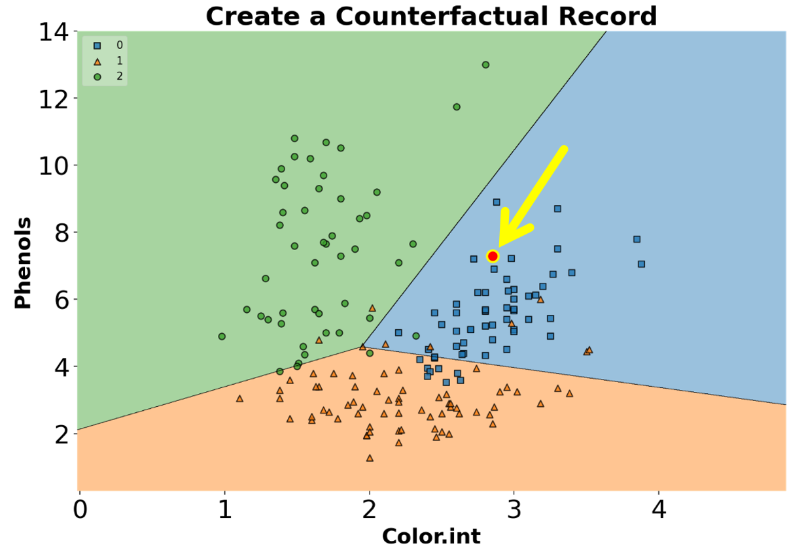
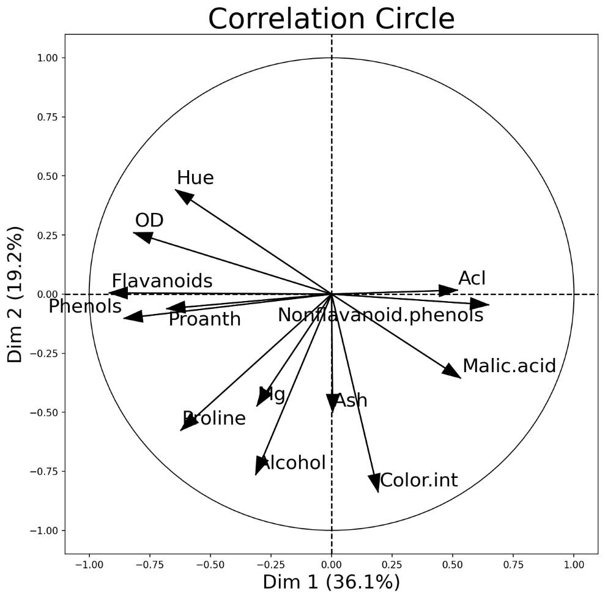
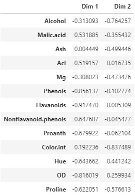
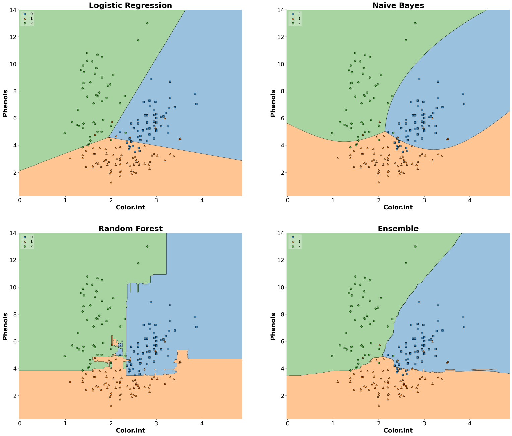
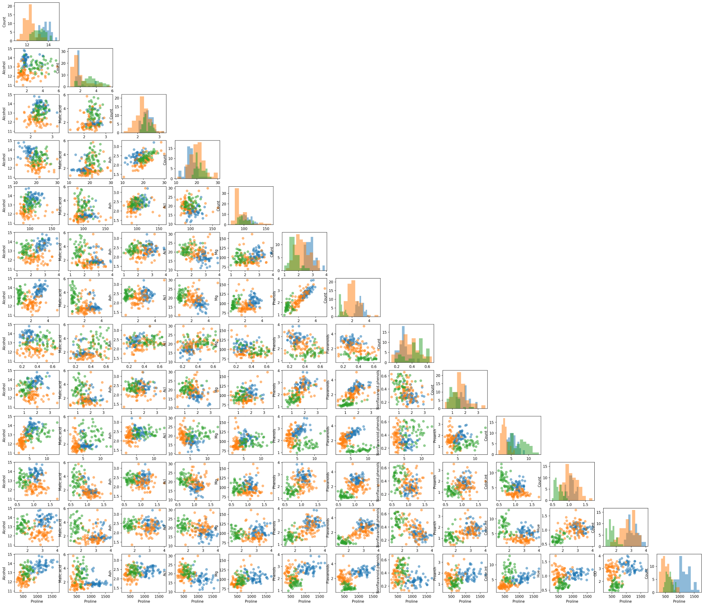

👉 This article is also published on Towards Data Science blog.
MLxtend library 1 (Machine Learning extensions) has many interesting functions for everyday data analysis and machine learning tasksAlthough there are many machine learning libraries available for Python such as scikit-learn, TensorFlow, Keras, PyTorch, etc, however, MLxtend offers additional functionalities and can be a valuable addition to your data science toolbox.
In this post, I will go over several tools of the library, in particular, I will cover:
- Create counterfactual (for model interpretability)
- PCA correlation circle
- Bias-variance decomposition
- Decision regions of classification models
- Matrix of scatter plots
- Bootstrapping
For a list of all functionalities this library offers, you can visit MLxtend’s documentation(see Raschka 2018).
MLxtend Library
MLxtend library is developed by Sebastian Raschka (a professor of statistics at the University of Wisconsin-Madison). The library has nice API documentation as well as many examples.
You can install the MLxtend package through the Python Package Index (PyPi) by running pip install mlxtend.
Dataset
In this post, I’m using the wine data set obtained from the Kaggle. The data contains 13 attributes of alcohol for three types of wine. This is a multiclass classification dataset, and you can find the description of the dataset here.
First, let’s import the data and prepare the input variables X (feature set) and the output variable y (target).
import pandas as pd
# Load wine data set (available at https://www.kaggle.com/tug004/3wine-classification-dataset)
df = pd.read_csv("./data/wine.csv")
# Target values (wine classes) in y
y_s = df["Wine"].map({1: 0, 2: 1, 3: 2}) # Convert classes 1, 2, 3 to 0, 1, 2 to avoid strange behavior
y = y_s.values
# Feature columns
X_df = df.drop(columns=["Wine"])
X = X_df.values
attribute_names = X_df.columnsMLxtend Functionalities
Create Counterfactual (for model interpretability)
For creating counterfactual records (in the context of machine learning), we need to modify the features of some records from the training set in order to change the model prediction(see Raschka N/A). This may be helpful in explaining the behavior of a trained model. The algorithm used in the library to create counterfactual records is developed by Wachter et al (see Wachter, Mittelstadt, and Russell 2017).
You can create counterfactual records using create_counterfactual() from the library. Note that this implementation works with any scikit-learn estimator that supports the predict() function. Below is an example of creating a counterfactual record for an ML model. The counterfactual record is highlighted in a red dot within the classifier’s decision regions (we will go over how to draw decision regions of classifiers later in the post).
from sklearn.linear_model import LogisticRegression
clf_logistic_regression = LogisticRegression(random_state=0)
clf_logistic_regression.fit(X_2d, y)from mlxtend.evaluate import create_counterfactual
from mlxtend.plotting import plot_decision_regions
counterfact = create_counterfactual(
x_reference=X_2d[15],
y_desired=2, # Desired class
model=clf_logistic_regression,
X_dataset=X_2d,
y_desired_proba=0.95,
lammbda=1,
random_seed=123
)
scatter_highlight_defaults = {
'c': 'red',
'edgecolor': 'yellow',
'alpha': 1.0,
'linewidths': 2,
'marker': 'o',
's': 120
}
fig, ax = plt.subplots(figsize=(10, 6))
plot_decision_regions(X_2d, y, clf=clf_logistic_regression, legend=2, ax=ax)
ax.tick_params(axis='both', which='major', labelsize=24)
ax.set_title("Create a Counterfactual Record", fontsize=24, fontweight="bold")
ax.set_xlabel("Color.int", fontsize=20, fontweight="bold")
ax.set_ylabel("Phenols", fontsize=20, fontweight="bold")
ax.scatter(
*counterfact,
**scatter_highlight_defaults
)
PCA Correlation Circle
An interesting and different way to look at PCA results is through a correlation circle that can be plotted using plot_pca_correlation_graph(). We basically compute the correlation between the original dataset columns and the PCs (principal components). Then, these correlations are plotted as vectors on a unit-circle. The axes of the circle are the selected dimensions (a.k.a. PCs). You can specify the PCs you’re interested in by passing them as a tuple to dimensions function argument. The correlation circle axes labels show the percentage of the explained variance for the corresponding PC(see Raschka 2018).
Remember that the normalization is important in PCA because the PCA projects the original data on to the directions that maximize the variance.
from mlxtend.plotting import plot_pca_correlation_graph
from sklearn.preprocessing import StandardScaler
X_norm = StandardScaler().fit_transform(X) # Normalizing the feature columns is recommended (X - mean) / std
fig, correlation_matrix = plot_pca_correlation_graph(
X_norm,
attribute_names,
dimensions=(1, 2),
figure_axis_size=6
)
PCA correlation circle diagram between the first two principal components and all data attributes

Correlation matrix between wine features and the first two PCs
Bias-Variance Decomposition
You often hear about the bias-variance tradeoff to show the model performance. In supervised learning, the goal often is to minimize both the bias error (to prevent underfitting) and variance (to prevent overfitting) so that our model can generalize beyond the training set (see Wikipedia 2021-07-17). This process is known as a bias-variance tradeoff.
Note that we cannot calculate the actual bias and variance for a predictive model, and the bias-variance tradeoff is a concept that an ML engineer should always consider and tries to find a sweet spot between the two.Having said that, we can still study the model’s expected generalization error for certain problems. In particular, we can use the bias-variance decomposition to decompose the generalization error into a sum of 1) bias, 2) variance, and 3) irreducible error[4,5].
The bias-variance decomposition can be implemented through bias_variance_decomp() in the library. An example of such implementation for a decision tree classifier is given below.
from sklearn.tree import DecisionTreeClassifier
from sklearn.model_selection import train_test_split
X_train, X_test, y_train, y_test = train_test_split(X_df.values, y,
test_size=0.3,
random_state=123,
shuffle=True,
stratify=y)
tree = DecisionTreeClassifier(random_state=123)from mlxtend.evaluate import bias_variance_decomp
avg_expected_loss, avg_bias, avg_var = bias_variance_decomp(
tree, X_train, y_train, X_test, y_test,
loss='mse',
num_rounds=50, # Number of bootstrap rounds for implementing the decomposition
random_seed=123
)
print(f"Average expected loss: {avg_expected_loss.round(3)}")
print(f"Average bias: {avg_bias.round(3)}")
print(f"Average variance: {avg_var.round(3)}")>>> Average expected loss: 0.108
>>> Average bias: 0.032
>>> Average variance: 0.076Plotting Decision Regions of Classifiers
MLxtend library has an out-of-the-box function plot_decision_regions() to draw a classifier’s decision regions in 1 or 2 dimensions.
Here, I will draw decision regions for several scikit-learn as well as MLxtend models. Let’s first import the models and initialize them.
# Models
from sklearn.linear_model import LogisticRegression
from sklearn.ensemble import RandomForestClassifier
from sklearn.naive_bayes import GaussianNB
from mlxtend.classifier import EnsembleVoteClassifier
# Initializing Classifiers
clf_logistic_regression = LogisticRegression(random_state=0)
clf_nb = GaussianNB()
clf_random_forest = RandomForestClassifier(random_state=0)
clf_ensemble = EnsembleVoteClassifier(
clfs=[clf_logistic_regression, clf_nb, clf_random_forest],
weights=[2, 1, 1],
voting='soft'
)
all_classifiers = [
("Logistic Regression", clf_logistic_regression),
("Naive Bayes", clf_nb),
("Random Forest", clf_random_forest),
("Ensemble", clf_ensemble),
]Now that we have initialized all the classifiers, let’s train the models and draw decision boundaries using plot_decision_regions() from the MLxtend library.
from mlxtend.plotting import plot_decision_regions
from itertools import product # Used to generate indices for figure subplots!
fig, axs = plt.subplots(2, 2, figsize=(28, 24), sharey=True)
for classifier, grid in zip(
all_classifiers,
product([0, 1], [0, 1]) # generate [(0, 0), (0, 1), (1, 0), (1, 1)]
):
clf_name, clf = classifier[0], classifier[1]
ax = axs[grid[0], grid[1]]
clf.fit(X_2d, y)
plot_decision_regions(
X=X_2d,
y=y,
clf=clf,
legend=2,
ax=ax
)
ax.set_title(clf_name, fontsize=24, fontweight="bold")
ax.tick_params(axis='both', which='major', labelsize=18)
ax.set_xlabel("Color.int", fontsize=20, fontweight="bold")
ax.set_ylabel("Phenols", fontsize=20, fontweight="bold")
Matrix of Scatter Plots
Another useful tool from MLxtend is the ability to draw a matrix of scatter plots for features (using scatterplotmatrix()). In order to add another dimension to the scatter plots, we can also assign different colors for different target classes.
from mlxtend.plotting import scatterplotmatrix
fig, axes = scatterplotmatrix(X[y==0], figsize=(34, 30), alpha=0.5)
fig, axes = scatterplotmatrix(X[y==1], fig_axes=(fig, axes), alpha=0.5)
fig, axes = scatterplotmatrix(X[y==2], fig_axes=(fig, axes), alpha=0.5, names=attribute_names)
A matrix of scatter plot of all wine attributes with different colors for wine types
By the way, for plotting similar scatter plots, you can also use Pandas’ scatter_matrix() or seaborn’s pairplot() function.
Bootstrapping
The bootstrap is an easy way to estimate a sample statistic and generate the corresponding confidence interval by drawing random samples with replacement. For this, you can use the bootstrap() function from the library. Note that you can pass a custom statistic to the bootstrap function through argument func. The custom function must return a scalar value.
from mlxtend.evaluate import bootstrap
# Generating 100 random data with a mean of 5
random_data = np.random.RandomState(123).normal(loc=5., size=100)
avg, std_err, ci_bounds = bootstrap(
random_data,
num_rounds=1000,
func=np.mean, # A function to compute a sample statistic can be passed here
ci=0.95,
seed=123
)
print(
f"Mean: {avg.round(2)} \n"
f"Standard Error: +/- {std_err.round(2)} \n"
f"CI95: [{ci_bounds[0].round(2)}, {ci_bounds[1].round(2)}]"
)>>> Mean: 5.03
>>> Standard Error: +/- 0.11
>>> CI95: [4.8, 5.26]👉 You can download a one-page summary of this post here.
Conclusion
In this post, we went over several MLxtend library functionalities, in particular, we talked about creating counterfactual instances for better model interpretability and plotting decision regions for classifiers, drawing PCA correlation circle, analyzing bias-variance tradeoff through decomposition, drawing a matrix of scatter plots of features with colored targets, and implementing the bootstrapping. The library is a nice addition to your data science toolbox, and I recommend giving this library a try.
📓 You can find the Jupyter notebook for this blog post on GitHub.
References
Footnotes
Citation
@online{alizadeh2021,
author = {Essi Alizadeh},
editor = {},
title = {MLxtend: {A} {Python} {Library} with {Interesting} {Tools}
for {Data} {Science} {Tasks}},
date = {2021-07-17},
url = {https://ealizadeh.com/blog/mlxtend-library-for-data-science},
langid = {en}
}